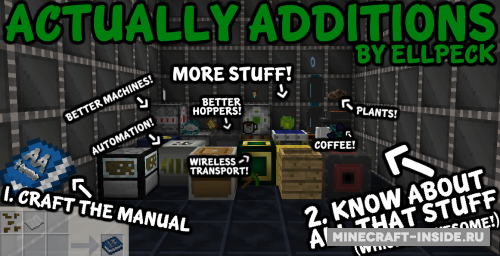
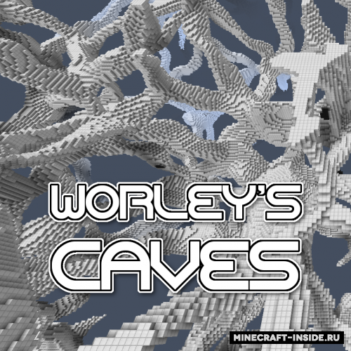
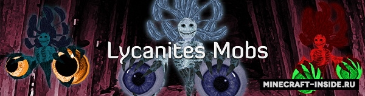
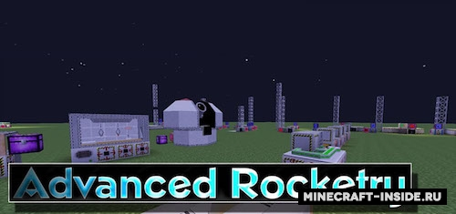
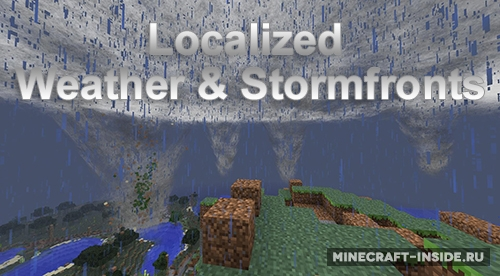
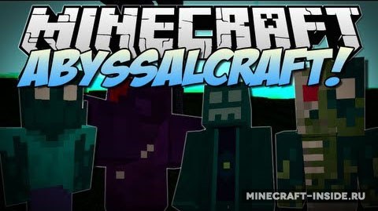
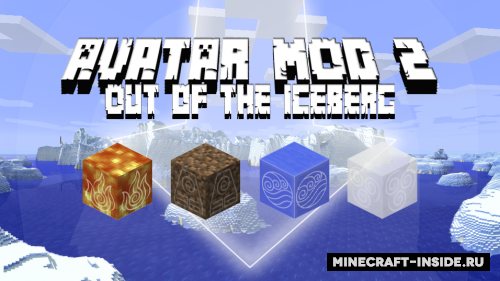

Довольно функциональная модификация, которая введет в игру огромное количество новых полезных блоков и механизмов, например: автоматический копатель шахты, механизм для срубки листвы и др.

Worley's Caves полностью переработает ванильную систему пещер в игре, сделав ее массивной и непрерывной. Идея мода создать непрерывную сеть из пещер, которая изменит геймплей майнкрафт. Вам не придется долго искать пещеру копая камни, теперь вы будете блуждать по "коридорам" в поисках приключений.

Старая и довольно популярная модификация, с которой в вашем мире появится много новых мобов, от мирных больших гигантов, до ужасающих элементалей и грозных теней. У каждого моба своя уникальная модель, размер и биом обитания.

Модификация позволит вам стать настоящим космонавтом, в игре вы сможете создать ракету, а также различные модули к ней, и отправится на покорение космических просторов! Здесь присутствует несколько солнечных систем, которые не дадут вас соскучиться и надолго затянут в игру. Также есть возможность создать космическую станцию и запускать спутники для сбора данных.

Мод содержит набор твиков существенно изменяющий поведение погодных условий в майнкрафт. Теперь можно будет увидеть надвигающийся дождь или снег из далека, поменяются облака, изменятся частицы осадков, из-за разницы температур биомов будут появляться торнадо, в пустынях начнут генерироваться песчаные бури. Кроме этого появятся механизмы, позволяющие следить и управлять погодой.

AbyssalCraft создан чтобы ваши путешествия по миру стали еще интереснее, в игре появятся новые биомы и измерения в которых блуждают странноватого вида мобы, конечно же, будут новые сеты оружия, инструментов и брони, новые блоки и еда. При его разработке большое влияние на автора оказали книги Горварда Лавкрафта, в связи с этим, все что добавляет этот мод будет так или иначе связано со злом, миром мертвых и магией.
